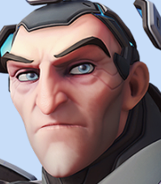
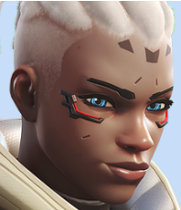

| Name And Description |
Image |
| Bastion: Bastion is a Defensive character who is designed to lock down an area with his turret form. He can dish out insane amounts of damage, but only while stationary, leaving him extremely vulnerable to attacks from behind. He excels on maps and in areas where your enemies are limited to only a few entrances, or small hallways. |
 |
| Cassidy: Cassidy is a Cowboy Duelist and mainly a DPS character in Overwatch 2. He is a cowboy duelist who specializes in mobility and quick precision shots. Cassidy is a simple damage hero to use, letting high-skill players show off their aim and letting low-skill players get used to the game without being overwhelmed with abilities and cooldowns. |
 |
| Sigma: Sigma is a tank hero in the game Overwatch. His main attack fires two balls, which implode in a small radius dealing damage. He can use the Kinetic Grasp to absorb projectiles and convert them into overhealth. He can also throw a rock at enemies to knock them down temporarily. |
 |
| Sojourn: Sojourn is a Damage hero, set to be released with Overwatch 2. As a former Overwatch Captain, Sojourn fields abilities designed to plan, lead, and execute strikes on her opposition. Sojourn offers a unique mid-range gameplay experience and a kit packed with some incredible mobility and artillery. |
 |
| DVA: D.Va is a character in the Overwatch franchise. She is a former professional gamer who now uses her skills to pilot a state-of-the-art mech in defense of her homeland. She was introduced in the 2016 video game Overwatch and appeared again in its sequel, Overwatch 2. |
 |